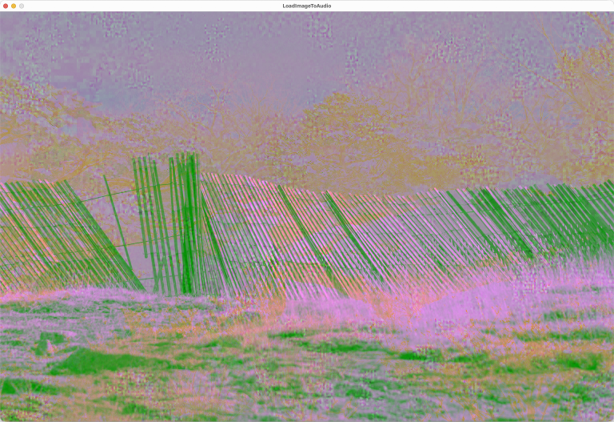

Class LoadImageToAudio
- All Implemented Interfaces:
processing.core.PConstants
QUICK START
- Run LoadImageToAudio. The sketch shows a rainbow-colored image generated by the getColors() method.
- Press 'o' to open an image file. Image and audio files for the PixelAudio example sketches can be found in the PixelAudio library "examples/example_data/" directory. Your selected image appears in the display and is transcoded to audio.
- Press the spacebar while the mouse is over the image to play its transcoded audio signal.
- Experiment with loading images and audio files to the various color channels. Press '?' to see the available key commands ('h' is reserved for the Hue channel).

You can write the current image to the audio signal with the 'w' key command. The sound of an image will probably be noisy since it is not designed with cyclic functions along the arbitrary signal path we impose on it with a PixelMapGen. RGB values range in integer steps from 0 to 255. When we transcode them to audio values in the range (-1.0, 1.0), we have less resolution than the full range of floating point values. There's always some noise in values transcoded from images. In most of the examples for the PixelAudio library, when you load an audio file and it gets transcoded into an image we still use the audio signal with all its resolution to play sounds. When you click in the image, you will be playing a sample from the signal.
Note that we are not doing any resampling of audio: the Sampler synth just gets set to the sample rate of the most recently loaded file. This can produce some interesting audio when you load files with different sample rates to different color channels and then write mapImage to the audio buffer ('w' command). The "_sonic" folder in the example data contains some audio files with different sampling rates.
You can also write the audio signal to the image with the 'W' key command. This will convert the audioSignal into HSB Brightness values and write them to mapImage. If you open this image in all color channels or in the HSB Brightness channel and then write it to the audio channel, you will get a reasonably good recreation of the audio, at 8-bit resolution.
An audio signal or image can be loaded to various channels of the image: Red, Green, Blue or all channels in the RGB color space or Hue, Brightness, or Saturation in the HSB color space. HSB Hue operations on grayscale images may result in no change to the image. Grayscale images have no saturation or hue, only brightness, when they are represented in the HSB color space. Loading the saturation of a grayscale image or a transcoded audio file to a color image will turn it gray. To work more effectively with HSB, we can load both hue and saturation from a color image to another color image or to a grayscale image, maintaining the brightness channel of the target image, with the 'c' command key.
You can enhance image contrast by stretching its histogram ('m' key). You can make the image brighter ('=' and '+' keys) or darker ('-' or '_' key) using a gamma function, a non-linear adjustment.
Press ' ' to play audio for the point the mouse is currently over. Press TAB to toggle animation. Press 'o' to open an audio or image file in all RGB channels. Press 'r' to open an audio or image file in the RED channel of the image. Press 'g' to open an audio or image file in the GREEN channel of the image. Press 'b' to open an audio or image file in the BLUE channel of the image. Press 'h' to open an audio or image file in the HSB Hue channel of the image. Press 'v' to open an audio or image file in the HSB Saturation channel of the image. Press 'l' to open an audio or image file in the HSB Brightness channel of the image. Press 'c' to apply color from an image file to the display image. Press 'k' to apply the hue and saturation in the colors array to mapImage. Press 'O' to reload the most recent image or audio file or show an Open File dialog. Press 'm' to remap the histogram of the image. Press '=' to use a gamma function to make the image lighter. Press '-' to use a gamma function to make the image darker. Press 'S' to save the audio signal to an audio file. Press 's' to save the image to a PNG file. Press 'f' to print the current frame rate to the console. Press 'w' to transcode the image and write it to the audio signal. Press 'W' to transcode the audio signal and write it to the image. Press '?' to show the Help Message in the console.PLEASE NOTE: Hue (H) and Saturation (V) operations may have no effect on gray pixels.
ALSO: Image brightness determines image audio. Images with uniform brightness will be silent.
-
Field Summary
FieldsModifier and TypeFieldDescription(package private) ADSRParams(package private) float(package private) File(package private) int(package private) String(package private) String(package private) String(package private) int(package private) ddf.minim.AudioOutput(package private) float[](package private) PixelAudioMapper.ChannelNames(package private) int[](package private) int(package private) float(package private) int(package private) float(package private) float(package private) int[](package private) int(package private) ArrayList<PixelMapGen>(package private) int(package private) int(package private) int(package private) File(package private) int(package private) String(package private) String(package private) String(package private) int(package private) boolean(package private) boolean(package private) boolean(package private) boolean(package private) processing.core.PImage(package private) PixelAudioMapper(package private) int(package private) float(package private) ddf.minim.MinimMinim audio library(package private) MultiGen(package private) ArrayList<int[]>(package private) boolean(package private) PixelAudio(package private) ddf.minim.MultiChannelBuffer(package private) Random(package private) float(package private) int[](package private) int(package private) int(package private) float(package private) int(package private) int(package private) int(package private) float(package private) PASamplerInstrument(package private) ArrayList<TimedLocation>(package private) intFields inherited from class processing.core.PApplet
args, ARGS_BGCOLOR, ARGS_DISABLE_AWT, ARGS_DISPLAY, ARGS_EDITOR_LOCATION, ARGS_EXTERNAL, ARGS_FULL_SCREEN, ARGS_HIDE_STOP, ARGS_LOCATION, ARGS_PRESENT, ARGS_SKETCH_FOLDER, ARGS_STOP_COLOR, ARGS_UI_SCALE, ARGS_WINDOW_COLOR, DEFAULT_HEIGHT, DEFAULT_WIDTH, disableAWT, displayHeight, displayWidth, dmouseX, dmouseY, emouseX, emouseY, exitCalled, EXTERNAL_MOVE, EXTERNAL_STOP, finished, firstMouse, focused, frameCount, frameRate, frameRateLastNanos, g, height, insideDraw, javaPlatform, javaVersion, javaVersionName, key, keyCode, keyEvent, keyPressed, keyRepeatEnabled, looping, matchPatterns, mouseButton, mouseEvent, mousePressed, mouseX, mouseY, pixelDensity, pixelHeight, pixels, pixelWidth, platform, pmouseX, pmouseY, ratioLeft, ratioScale, ratioTop, recorder, redraw, rheight, rmouseX, rmouseY, rwidth, surface, useNativeSelect, width, windowX, windowYFields inherited from interface processing.core.PConstants
ADD, ALPHA, ALT, AMBIENT, ARC, ARGB, ARROW, BACKSPACE, BASELINE, BEVEL, BEZIER_VERTEX, BLEND, BLUR, BOTTOM, BOX, BREAK, BURN, CENTER, CHATTER, CHORD, CLAMP, CLOSE, CODED, COMPLAINT, CONTROL, CORNER, CORNERS, CROSS, CURVE_VERTEX, CUSTOM, DARKEST, DEG_TO_RAD, DELETE, DIAMETER, DIFFERENCE, DILATE, DIRECTIONAL, DISABLE_ASYNC_SAVEFRAME, DISABLE_BUFFER_READING, DISABLE_DEPTH_MASK, DISABLE_DEPTH_SORT, DISABLE_DEPTH_TEST, DISABLE_KEY_REPEAT, DISABLE_NATIVE_FONTS, DISABLE_OPENGL_ERRORS, DISABLE_OPTIMIZED_STROKE, DISABLE_STROKE_PERSPECTIVE, DISABLE_STROKE_PURE, DISABLE_TEXTURE_MIPMAPS, DODGE, DOWN, DXF, ELLIPSE, ENABLE_ASYNC_SAVEFRAME, ENABLE_BUFFER_READING, ENABLE_DEPTH_MASK, ENABLE_DEPTH_SORT, ENABLE_DEPTH_TEST, ENABLE_KEY_REPEAT, ENABLE_NATIVE_FONTS, ENABLE_OPENGL_ERRORS, ENABLE_OPTIMIZED_STROKE, ENABLE_STROKE_PERSPECTIVE, ENABLE_STROKE_PURE, ENABLE_TEXTURE_MIPMAPS, ENTER, EPSILON, ERODE, ESC, EXCLUSION, FX2D, GIF, GRAY, GROUP, HALF_PI, HAND, HARD_LIGHT, HINT_COUNT, HSB, IMAGE, INVERT, JAVA2D, JPEG, LANDSCAPE, LEFT, LIGHTEST, LINE, LINE_LOOP, LINE_STRIP, LINES, LINUX, MACOS, MACOSX, MAX_FLOAT, MAX_INT, MIN_FLOAT, MIN_INT, MITER, MODEL, MODELVIEW, MOVE, MULTIPLY, NORMAL, OPAQUE, OPEN, OPENGL, ORTHOGRAPHIC, OTHER, OVERLAY, P2D, P3D, PATH, PDF, PERSPECTIVE, PI, PIE, platformNames, POINT, POINTS, POLYGON, PORTRAIT, POSTERIZE, PROBLEM, PROJECT, PROJECTION, QUAD, QUAD_BEZIER_VERTEX, QUAD_STRIP, QUADRATIC_VERTEX, QUADS, QUARTER_PI, RAD_TO_DEG, RADIUS, RECT, REPEAT, REPLACE, RETURN, RGB, RIGHT, ROUND, SCREEN, SHAPE, SHIFT, SOFT_LIGHT, SPAN, SPHERE, SPOT, SQUARE, SUBTRACT, SVG, TAB, TARGA, TAU, TEXT, THIRD_PI, THRESHOLD, TIFF, TOP, TRIANGLE, TRIANGLE_FAN, TRIANGLE_STRIP, TRIANGLES, TWO_PI, UP, VERTEX, WAIT, WHITESPACE, WINDOWS, X, Y, Z -
Constructor Summary
Constructors -
Method Summary
Modifier and TypeMethodDescriptionint[]adjustGamma(int[] source) int[]applyColor(int[] colorSource, int[] graySource, int[] lut) Utility method for applying hue and saturation values from a source array of RGB values to the brightness values in a target array of RGB values, using a lookup table to redirect indexing.voidapplyImageColor(File imgFile, processing.core.PImage targetImage) Apply the hue and saturation of a chosen image file to the brightness channel of the display image.voidaudioFileSelectedWrite(File selection) intaudioMouseClick(int x, int y) intcalcSampleLen(int durationMS) voidCall to initiate process of opening an image file to get its color data.voidWrapper method for Processing's selectInput commandintclipToHeight(int y) intclipToWidth(int x) voidcolorFileSelected(File selectedFile) callback method for chooseColorImage()voiddraw()voiddrawCircle(int x, int y) voidfileSelected(File selectedFile) callback method for chooseFile(), handles standard audio and image formats for Processing.doublegauss(double mean, double variance) Returns a Gaussian variable using a Java library call toRandom.nextGaussian.int[]int[]getHistoBounds(int[] source) intgetSamplePos(int x, int y) Calculates the index of the image pixel within the signal path, taking the shifting of pixels and audioSignal into account.voidimageFileSelectedWrite(File selection) voidInitialize audio variablesvoidInitialize mapImage and associated variablesvoidvoidloadAudioFile(File audioFile) Attempts to load audio data from a selected file into playBuffer, then calls writeAudioToImage() to transcode audio data and write it to a mapImage channel.voidloadImageFile(File imgFile) Attempts to load image data from a selected file into mapImage, then calls writeImageToAudio() to transcode HSB brightness color data from the image to audio and writes it to audioBuffer and audioSignal.static voidvoidintplaySample(int samplePos, int sampleCount, float amplitude) Plays an audio sample with PASamplerInstrument and default ADSR.voidvoidsaveAudioToFile(float[] samples, float sampleRate, String fileName) Saves audio data to 16-bit integer PCM format, which Processing can also open.voidsaveImageToFile(processing.core.PImage img, String fileName) voidvoidvoidsetGamma(float gamma) voidsettings()voidsetup()voidshowHelp()voidint[]stretch(int[] source, int low, int high) voidConvenience method to call writeAudioToImage(float[], PixelAudioMapper, PImage, PixelAudioMapper.ChannelNames) with audioSignal, mapper, and mapImage and ChannelNames.L as arguments.voidwriteAudioToImage(float[] sig, PixelAudioMapper mapper, processing.core.PImage img, PixelAudioMapper.ChannelNames chan) Transcodes audio data in sig[] and writes it to color channel chan of mapImage using the lookup tables in mapper to redirect indexing.voidvoidwriteImageToAudio(processing.core.PImage img, PixelAudioMapper mapper, float[] sig, PixelAudioMapper.ChannelNames chan) This method writes a color channel from the an image to an audio signal, fulfilling a central concept of the PixelAudio library: image is sound.Methods inherited from class processing.core.PApplet
abs, abs, acos, alpha, ambient, ambient, ambient, ambientLight, ambientLight, append, append, append, append, append, append, applyMatrix, applyMatrix, applyMatrix, applyMatrix, applyMatrix, arc, arc, arraycopy, arraycopy, arraycopy, arrayCopy, arrayCopy, arrayCopy, asin, atan, atan2, attrib, attrib, attrib, attribColor, attribNormal, attribPosition, background, background, background, background, background, background, background, beginCamera, beginContour, beginPGL, beginRaw, beginRaw, beginRecord, beginRecord, beginShape, beginShape, bezier, bezier, bezierDetail, bezierPoint, bezierTangent, bezierVertex, bezierVertex, binary, binary, binary, binary, blend, blend, blendColor, blendMode, blue, box, box, brightness, calcSketchPath, camera, camera, ceil, checkAlpha, checkExtension, choice, choice, circle, clear, clip, color, color, color, color, color, color, color, color, colorMode, colorMode, colorMode, colorMode, concat, concat, concat, concat, concat, concat, concat, constrain, constrain, copy, copy, copy, cos, createFont, createFont, createFont, createGraphics, createGraphics, createGraphics, createImage, createInput, createInput, createInputRaw, createOutput, createOutput, createPath, createPath, createPrimaryGraphics, createReader, createReader, createReader, createShape, createShape, createShape, createWriter, createWriter, createWriter, cursor, cursor, cursor, cursor, curve, curve, curveDetail, curvePoint, curveTangent, curveTightness, curveVertex, curveVertex, dataFile, dataPath, day, debug, degrees, delay, dequeueEvents, desktopFile, desktopPath, die, die, directionalLight, displayDensity, displayDensity, dispose, dist, dist, edge, ellipse, ellipseMode, emissive, emissive, emissive, endCamera, endContour, endPGL, endRaw, endRecord, endShape, endShape, exec, exec, exit, exitActual, exitCalled, exp, expand, expand, expand, expand, expand, expand, expand, expand, expand, expand, expand, expand, expand, expand, expand, expand, expand, expand, fill, fill, fill, fill, fill, fill, filter, filter, filter, floor, flush, focusGained, focusLost, frameMoved, frameRate, frustum, fullScreen, fullScreen, fullScreen, fullScreen, get, get, get, getExtension, getGraphics, getMatrix, getMatrix, getMatrix, getSurface, green, handleDraw, handleKeyEvent, handleMethods, handleMouseEvent, hex, hex, hex, hex, hideMenuBar, hint, hour, hue, image, image, image, imageMode, initSurface, insertFrame, isLooping, join, join, keyPressed, keyReleased, keyReleased, keyTyped, keyTyped, launch, lerp, lerpColor, lerpColor, lightFalloff, lights, lightSpecular, line, line, link, listFiles, listFiles, listPaths, loadBytes, loadBytes, loadBytes, loadFont, loadImage, loadImage, loadJSONArray, loadJSONArray, loadJSONObject, loadJSONObject, loadPixels, loadShader, loadShader, loadShape, loadShape, loadStrings, loadStrings, loadStrings, loadStrings, loadTable, loadTable, loadXML, loadXML, log, loop, mag, mag, main, main, main, makeGraphics, map, mask, match, matchAll, max, max, max, max, max, max, method, millis, min, min, min, min, min, min, minute, modelX, modelY, modelZ, month, mouseClicked, mouseDragged, mouseDragged, mouseEntered, mouseEntered, mouseExited, mouseExited, mouseMoved, mouseMoved, mousePressed, mousePressed, mouseReleased, mouseReleased, mouseWheel, mouseWheel, nf, nf, nf, nf, nf, nf, nfc, nfc, nfc, nfc, nfp, nfp, nfp, nfp, nfs, nfs, nfs, nfs, noClip, noCursor, noFill, noise, noise, noise, noiseDetail, noiseDetail, noiseSeed, noLights, noLoop, norm, normal, noSmooth, noStroke, noTexture, noTint, orientation, ortho, ortho, ortho, parseBoolean, parseBoolean, parseBoolean, parseBoolean, parseByte, parseByte, parseByte, parseByte, parseByte, parseByte, parseByte, parseByte, parseChar, parseChar, parseChar, parseChar, parseFloat, parseFloat, parseFloat, parseFloat, parseFloat, parseFloat, parseFloat, parseInt, parseInt, parseInt, parseInt, parseInt, parseInt, parseInt, parseInt, parseInt, parseInt, parseInt, parseInt, parseJSONArray, parseJSONObject, parseXML, parseXML, pause, perspective, perspective, pixelDensity, point, point, pointLight, pop, popMatrix, popStyle, postEvent, postWindowMoved, postWindowResized, pow, print, print, print, print, print, print, print, print, print, printArray, printCamera, println, println, println, println, println, println, println, println, println, println, println, printMatrix, printProjection, printStackTrace, push, pushMatrix, pushStyle, quad, quadraticVertex, quadraticVertex, radians, random, random, randomGaussian, randomSeed, rect, rect, rect, rectMode, red, redraw, registerMethod, requestImage, requestImage, resetMatrix, resetShader, resetShader, resume, reverse, reverse, reverse, reverse, reverse, reverse, reverse, rotate, rotate, rotateX, rotateY, rotateZ, round, runSketch, runSketch, runSketch, saturation, save, saveBytes, saveBytes, saveBytes, saveFile, saveFrame, saveFrame, saveJSONArray, saveJSONArray, saveJSONObject, saveJSONObject, savePath, saveStream, saveStream, saveStream, saveStream, saveStream, saveStrings, saveStrings, saveStrings, saveTable, saveTable, saveXML, saveXML, scale, scale, scale, screenX, screenX, screenY, screenY, screenZ, second, selectCallback, selectFolder, selectFolder, selectFolder, selectInput, selectInput, selectInput, selectOutput, selectOutput, selectOutput, set, set, setMatrix, setMatrix, setMatrix, setSize, shader, shader, shape, shape, shape, shapeMode, shearX, shearY, shell, shininess, shorten, shorten, shorten, shorten, shorten, shorten, shorten, showDepthWarning, showDepthWarningXYZ, showMethodWarning, showMissingWarning, showSurface, showVariationWarning, sin, size, size, size, sketchDisplay, sketchFile, sketchFullScreen, sketchHeight, sketchOutputPath, sketchOutputStream, sketchPath, sketchPath, sketchPixelDensity, sketchRenderer, sketchSmooth, sketchWidth, sketchWindowColor, smooth, smooth, sort, sort, sort, sort, sort, sort, sort, sort, sort, sort, specular, specular, specular, sphere, sphereDetail, sphereDetail, splice, splice, splice, splice, splice, splice, splice, splice, splice, splice, splice, splice, splice, split, split, splitTokens, splitTokens, spotLight, sq, sqrt, square, start, startSurface, stop, str, str, str, str, str, str, str, str, str, str, stroke, stroke, stroke, stroke, stroke, stroke, strokeCap, strokeJoin, strokeWeight, style, subset, subset, subset, subset, subset, subset, subset, subset, subset, subset, subset, subset, subset, subset, subset, subset, subset, subset, tan, text, text, text, text, text, text, text, text, text, text, text, textAlign, textAlign, textAscent, textDescent, textFont, textFont, textLeading, textMode, textSize, texture, textureMode, textureWrap, textWidth, textWidth, textWidth, thread, tint, tint, tint, tint, tint, tint, translate, translate, triangle, trim, trim, unbinary, unhex, unregisterMethod, updatePixels, updatePixels, urlDecode, urlEncode, vertex, vertex, vertex, vertex, vertex, windowMove, windowMoved, windowRatio, windowResizable, windowResize, windowResized, windowTitle, year
-
Field Details
-
pixelaudio
PixelAudio pixelaudio -
multigen
MultiGen multigen -
genList
ArrayList<PixelMapGen> genList -
offsetList
ArrayList<int[]> offsetList -
genWidth
int genWidth -
genHeight
int genHeight -
mapper
PixelAudioMapper mapper -
mapSize
int mapSize -
mapImage
processing.core.PImage mapImage -
chan
-
colors
int[] colors -
rando
Random rando -
minim
ddf.minim.Minim minimMinim audio library -
audioOut
ddf.minim.AudioOutput audioOut -
playBuffer
ddf.minim.MultiChannelBuffer playBuffer -
isBufferStale
boolean isBufferStale -
sampleRate
float sampleRate -
audioSignal
float[] audioSignal -
rgbSignal
int[] rgbSignal -
audioLength
int audioLength -
audioFileLength
int audioFileLength -
sampleLen
int sampleLen -
durationMS
int durationMS -
synth
PASamplerInstrument synth -
adsr
ADSRParams adsr -
maxAmplitude
float maxAmplitude -
attackTime
float attackTime -
decayTime
float decayTime -
sustainLevel
float sustainLevel -
releaseTime
float releaseTime -
audioFile
File audioFile -
audioFilePath
String audioFilePath -
audioFileName
String audioFileName -
audioFileTag
String audioFileTag -
imageFile
File imageFile -
imageFilePath
String imageFilePath -
imageFileName
String imageFileName -
imageFileTag
String imageFileTag -
imageFileWidth
int imageFileWidth -
imageFileHeight
int imageFileHeight -
isLoadFromImage
boolean isLoadFromImage -
isAnimating
boolean isAnimating -
oldIsAnimating
boolean oldIsAnimating -
shift
int shift -
totalShift
int totalShift -
isLooping
boolean isLooping -
sampleX
int sampleX -
sampleY
int sampleY -
samplePos
int samplePos -
timeLocsArray
ArrayList<TimedLocation> timeLocsArray -
count
int count -
histoHigh
int histoHigh -
histoLow
int histoLow -
gammaLighter
float gammaLighter -
gammaDarker
float gammaDarker -
gammaTable
int[] gammaTable
-
-
Constructor Details
-
LoadImageToAudio
public LoadImageToAudio()
-
-
Method Details
-
main
-
settings
public void settings()- Overrides:
settingsin classprocessing.core.PApplet
-
setup
public void setup()- Overrides:
setupin classprocessing.core.PApplet
-
initAudio
public void initAudio()Initialize audio variables -
initImage
public void initImage()Initialize mapImage and associated variables -
getColors
public int[] getColors()- Returns:
- an array of RGB colors that cover a full rainbow spectrum
-
draw
public void draw()- Overrides:
drawin classprocessing.core.PApplet
-
stepAnimation
public void stepAnimation() -
runTimeArray
public void runTimeArray() -
drawCircle
public void drawCircle(int x, int y) -
keyPressed
public void keyPressed()- Overrides:
keyPressedin classprocessing.core.PApplet
-
showHelp
public void showHelp() -
applyColor
public int[] applyColor(int[] colorSource, int[] graySource, int[] lut) Utility method for applying hue and saturation values from a source array of RGB values to the brightness values in a target array of RGB values, using a lookup table to redirect indexing.- Parameters:
colorSource- a source array of RGB data from which to obtain hue and saturation valuesgraySource- an target array of RGB data from which to obtain brightness valueslut- a lookup table, must be the same size as colorSource and graySource- Returns:
- the graySource array of RGB values, with hue and saturation values changed
- Throws:
IllegalArgumentException- if array arguments are null or if they are not the same length
-
mouseClicked
public void mouseClicked()- Overrides:
mouseClickedin classprocessing.core.PApplet
-
clipToWidth
public int clipToWidth(int x) - Parameters:
x- a value to constrain to the current window width- Returns:
- the constrained value
-
clipToHeight
public int clipToHeight(int y) - Parameters:
y- a value to constrain to the current window height- Returns:
- the constrained value
-
audioMouseClick
public int audioMouseClick(int x, int y) -
getSamplePos
public int getSamplePos(int x, int y) Calculates the index of the image pixel within the signal path, taking the shifting of pixels and audioSignal into account. See the MusicWindowBox sketch for use of a windowed buffer in this calculation.- Parameters:
x- an x coordinate within mapImage and display boundsy- a y coordinate within mapImage and display bounds- Returns:
- the index of the sample corresponding to (x,y) on the signal path
-
calcSampleLen
public int calcSampleLen(int durationMS) - Returns:
- a length in samples with some Gaussian variation
-
gauss
public double gauss(double mean, double variance) Returns a Gaussian variable using a Java library call toRandom.nextGaussian.- Parameters:
mean-variance-- Returns:
- a Gaussian-distributed random number with mean
meanand variancevariance
-
playSample
public int playSample(int samplePos, int sampleCount, float amplitude) Plays an audio sample with PASamplerInstrument and default ADSR.- Parameters:
samplePos- position of the sample in the audio buffersampleCount- number of source-buffer samples to playamplitude- amplitude of the samples on playback- Returns:
- calculated event duration in output samples
-
writeImageToAudio
public void writeImageToAudio() -
getHistoBounds
public int[] getHistoBounds(int[] source) -
stretch
public int[] stretch(int[] source, int low, int high) -
setGamma
public void setGamma(float gamma) -
adjustGamma
public int[] adjustGamma(int[] source) -
chooseColorImage
public void chooseColorImage()Call to initiate process of opening an image file to get its color data. -
colorFileSelected
callback method for chooseColorImage()- Parameters:
selectedFile- the File the user selected
-
applyImageColor
Apply the hue and saturation of a chosen image file to the brightness channel of the display image.- Parameters:
imgFile- selected image file, source of hue and saturation valuestargetImage- target image where brightness will remain unchanged
-
chooseFile
public void chooseFile()Wrapper method for Processing's selectInput command -
fileSelected
callback method for chooseFile(), handles standard audio and image formats for Processing. If a file has been successfully selected, continues with a call to loadAudioFile() or loadImageFile().- Parameters:
selectedFile- the File the user selected
-
loadAudioFile
Attempts to load audio data from a selected file into playBuffer, then calls writeAudioToImage() to transcode audio data and write it to a mapImage channel. Note that we are not doing any resampling of audio: the Sampler synth just gets set to the sample rate of the most recently loaded file.- Parameters:
audioFile- an audio file
-
writeAudioToImage
public void writeAudioToImage()Convenience method to call writeAudioToImage(float[], PixelAudioMapper, PImage, PixelAudioMapper.ChannelNames) with audioSignal, mapper, and mapImage and ChannelNames.L as arguments. -
writeAudioToImage
public void writeAudioToImage(float[] sig, PixelAudioMapper mapper, processing.core.PImage img, PixelAudioMapper.ChannelNames chan) Transcodes audio data in sig[] and writes it to color channel chan of mapImage using the lookup tables in mapper to redirect indexing. Calls mapper.mapSigToImg(), which will throw an IllegalArgumentException if sig.length != img.pixels.length or sig.length != mapper.getSize().- Parameters:
sig- an source array of float, should be audio data in the range [-1.0, 1.0]mapper- a PixelAudioMapperimg- a target PImage, modified by audio data in sigchan- a color channel
-
loadImageFile
Attempts to load image data from a selected file into mapImage, then calls writeImageToAudio() to transcode HSB brightness color data from the image to audio and writes it to audioBuffer and audioSignal.- Parameters:
imgFile- an image file
-
writeImageToAudio
public void writeImageToAudio(processing.core.PImage img, PixelAudioMapper mapper, float[] sig, PixelAudioMapper.ChannelNames chan) This method writes a color channel from the an image to an audio signal, fulfilling a central concept of the PixelAudio library: image is sound. Calls mapper.mapImgToSig(), which will throw an IllegalArgumentException if img.pixels.length != sig.length or img.width * img.height != mapper.getWidth() * mapper.getHeight().- Parameters:
img- a PImage, a source of datamapper- a PixelAudioMapper, handles mapping between image and audio signalsig- an target array of float in audio format, rewritten by this methodchan- a color channel
-
saveToAudio
public void saveToAudio() -
audioFileSelectedWrite
-
saveAudioToFile
public void saveAudioToFile(float[] samples, float sampleRate, String fileName) throws IOException, UnsupportedAudioFileException Saves audio data to 16-bit integer PCM format, which Processing can also open. This same method can be called as a static method in PixelAudio.- Parameters:
samples- an array of floats in the audio range (-1.0f, 1.0f)sampleRate- audio sample rate for the filefileName- name of the file to save to- Throws:
IOException- an Exception you'll need to handle to call this method (see keyPressed entry for 's')UnsupportedAudioFileException- another Exception (see keyPressed entry for 's')
-
saveToImage
public void saveToImage() -
imageFileSelectedWrite
-
saveImageToFile
-